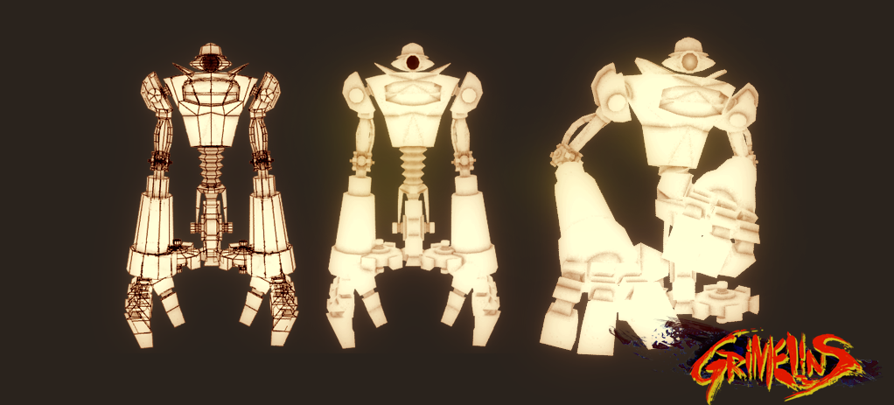
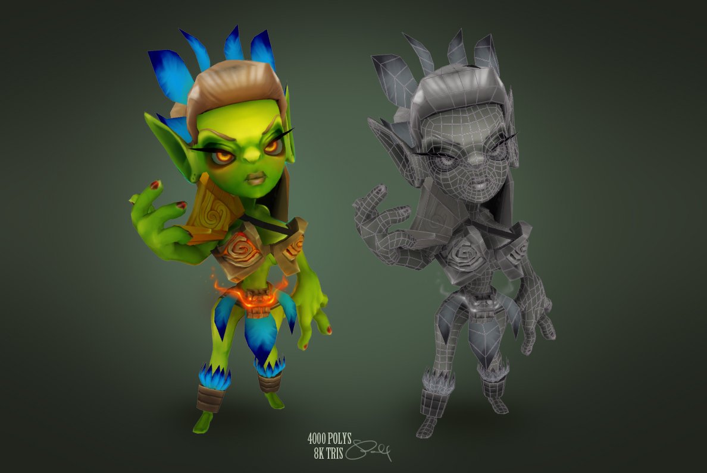

I'm an Imagineer, working for Disney as a Software Developer in Los Angeles. I'm helping to create the next generation of theme parks, which started with the new Star Wars additions. I'm currently working on Avenger's Headquarters in Disneyland. To accomplish this, I'm working with fellow Imagineers from many different disciplines. I help to provide tools and pipelines for these folks to do their jobs as effectively as possible, and every once in awhile, I'll contribute code that goes directly into attractions. I mainly work in C++ and Python, with a focus in game engines such as UE4. Here are some projects, past and present.
Mekazoo
Mekazoo is what I devoted the majority of my time to in 2014. I worked on this title with 14 (and growing) other developers at a startup indie game studio called Good Mood Creators. I was one of three programmers on the team and I was responsible for the camera system, tools for designers and artists ( in Unity and Maya ), as well as performance, debugging, character controllers, game logic, AI, and a host of other developer tasks ranging from web dev to design.
More Info about the Game!
Grimelins
My Junior year project was a 3D, 3rd-Person boss battle barrage. In the same vein as God of War, we're trying to give the player the most visual feedback for the least amount of effort possible. On this project I was the Graphics Programmer. I was responsible for the art pipeline (FBX 2010 to engine), the skinned mesh rendering, the animation system, the sound engine, lighting, post-processing, and some smatterings of gameplay. The game is entirely from scratch in C++ with DirectX 9.0c as the graphics API the graphics engine is built upon.
 
Download the Game (PC Only)